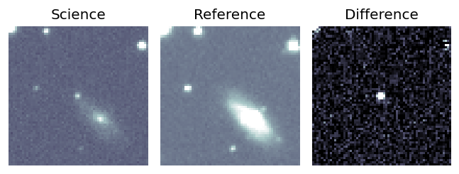
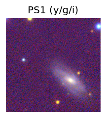
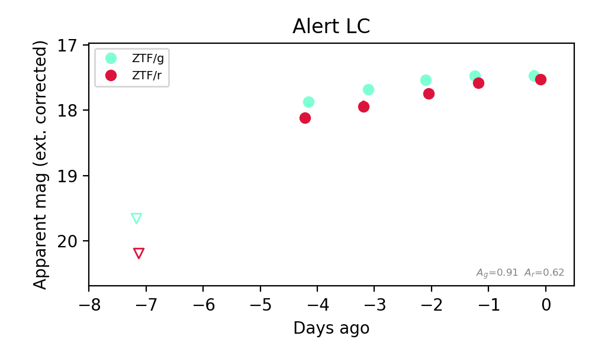
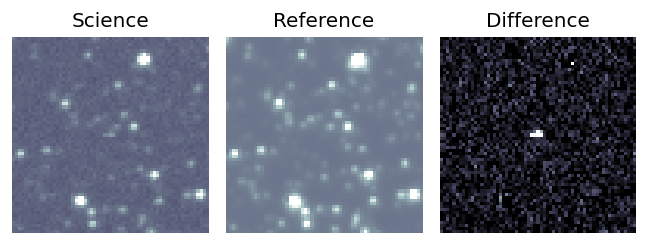
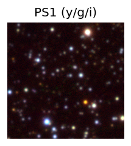
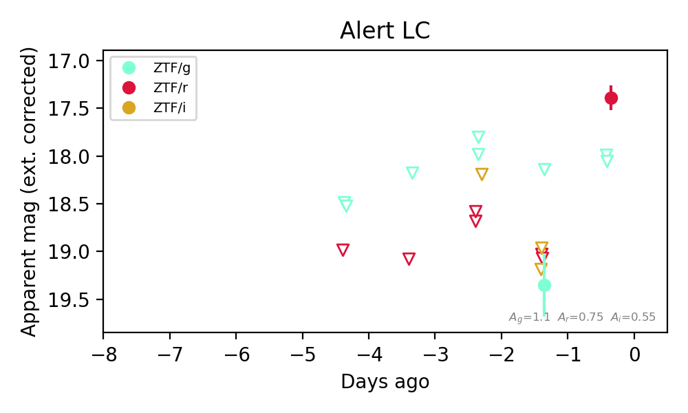
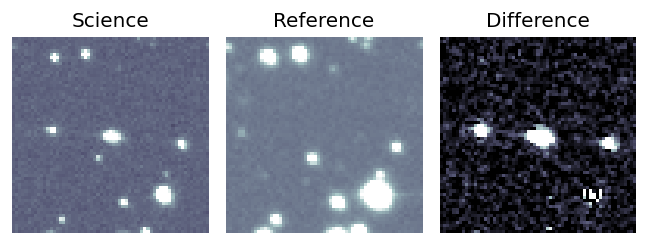
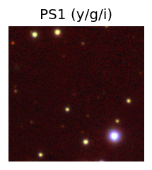
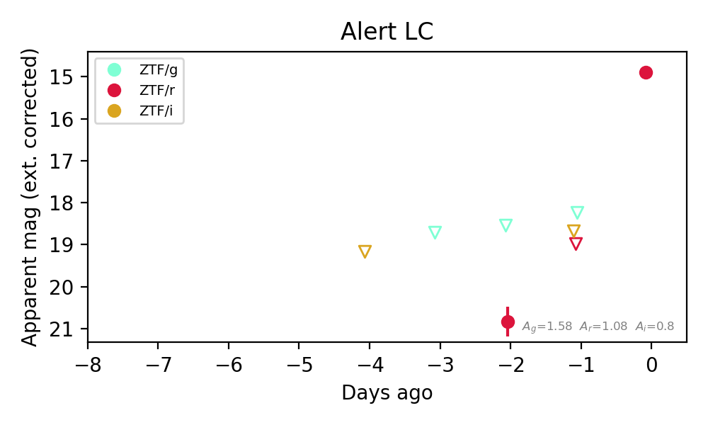

Candidate List 20260926Last night — ZTF: 1,030 passed basic cuts (33 young) · LSST: 0 passed basic cuts (0 young)Previous Day Next Day
Section 1: New Sources (age<1d) Section 2: Old (1-5d) sources observed last nightplaceholder
Section 1: New Afterglow/FBOT Cands Last Night (0)
Section 2: Older Sources Observed Last Night (6)
0. [ZTF] ZTF26abwacec (Afterglow?) [Back to Top] [Share] [Trigger Swift] [Fritz Alert] [Fritz Source] [Lasair]RA, Dec: 288.92824, -4.04148 19h15m42.78s, -4d-2m-29.34sGalactic (l, b): 32.08649, -7.23819 ext(g-r) = 0.708


TESS: Sectors [54 80]
PS1: 0 sources in 3 arcsec
LegacySurvey: 0 sources in 3 arcsec

Extinction-corrected gr color:
From alerts: -0.23 +/- 0.31 mag
Extinction-corrected gi color:
From alerts: -0.66 +/- 0.23 mag
Extinction-corrected ri color:
From alerts: -0.01 +/- 0.18 mag
Consistent with synchrotron, g-r>0!
Rise Rate:
i: 0.79 mag/day
Fade Rate:
g: 0.35 mag/day
r: 0.28 mag/day
i: 0.26 mag/day
1. [ZTF] ZTF26abwqfcv (Afterglow?FBOT?) [Back to Top] [Share] [Trigger Swift] [Fritz Alert] [Fritz Source] [Lasair]RA, Dec: 48.84407, 25.01121 3h15m22.58s, 25d 0m40.37sGalactic (l, b): 159.7749, -27.37649 ext(g-r) = 0.148


TESS: Sectors [18 42 43 44 70 71]
PS1: 1 source in 3 arcsec Closest: d = 0.77 arcsec photoz=0.38+/-0.14 peak abs mag = -23.15
LegacySurvey: 0 sources in 3 arcsec

Extinction-corrected gr color:
From alerts: -0.16 +/- 0.19 mag
Extinction-corrected gi color:
From alerts: -0.32 +/- 0.17 mag
Extinction-corrected ri color:
From alerts: -0.09 +/- 0.14 mag
Consistent with synchrotron, g-r>0!
Rise Rate:
g: 0.34 mag/day
r: 1.45 mag/day
i: 0.29 mag/day
Fade Rate:
r: 0.79 mag/day
2. [ZTF] ZTF26abwsmzz (Afterglow?) [Back to Top] [Share] [Trigger Swift] [Fritz Alert] [Fritz Source] [Lasair]RA, Dec: 43.97685, 46.23185 2h55m54.44s, 46d13m54.67sGalactic (l, b): 144.32047, -11.40665 ext(g-r) = 0.292


TESS: Sectors [18 58 85]
PS1: 0 sources in 3 arcsec
LegacySurvey: 0 sources in 3 arcsec

Extinction-corrected gr color:
From alerts: -0.06 +/- 0.11 mag
Consistent with synchrotron, g-r>0!
Rise Rate:
g: 0.59 mag/day
r: 0.71 mag/day
Fade Rate:
3. [ZTF] ZTF26abxcvtt (Afterglow?) [Back to Top] [Share] [Trigger Swift] [Fritz Alert] [Fritz Source] [Lasair]RA, Dec: 10.55798, 41.27681 0h42m13.92s, 41d16m36.50sGalactic (l, b): 121.07231, -21.5617 ext(g-r) = 0.488


TESS: Sectors [17 57 84]
PS1: 1 source in 3 arcsec Closest: d = 1.66 arcsec photoz=0.42+/-0.02 peak abs mag = -24.88
LegacySurvey: 0 sources in 3 arcsec

Extinction-corrected gr color:
From alerts: 0.48 +/- 0.16 mag
Consistent with synchrotron, g-r>0!
Rise Rate:
g: 0.58 mag/day
r: 0.09 mag/day
Fade Rate:
r: 0.25 mag/day
4. [ZTF] ZTF26abxpqzh (FBOT?) [Back to Top] [Share] [Trigger Swift] [Fritz Alert] [Fritz Source] [Lasair]RA, Dec: 284.00332, -10.21849 18h56m0.80s, -10d-13m-6.56sGalactic (l, b): 24.32507, -5.64572 ext(g-r) = 0.352


TESS: Sectors 80
PS1: 1 source in 3 arcsec Closest: d = 1.46 arcsec photoz=0.52+/-0.04 peak abs mag = -25.05
LegacySurvey: 0 sources in 3 arcsec

Extinction-corrected gr color:
From alerts: 0.66 +/- 99 mag
Extinction-corrected gi color:
From alerts: 0.17 +/- 99 mag
Rise Rate:
r: 1.62 mag/day
Fade Rate:
5. [ZTF] ZTF26abxsdlh (FBOT?) [Back to Top] [Share] [Trigger Swift] [Fritz Alert] [Fritz Source] [Lasair]RA, Dec: 94.74969, 8.35582 6h18m59.93s, 8d21m20.96sGalactic (l, b): 201.78643, -3.32241 ext(g-r) = 0.508


TESS: Sectors [ 6 33 87 111]
PS1: 1 source in 3 arcsec Closest: d = 1.47 arcsec photoz=0.98+/-0.11 peak abs mag = -29.21
LegacySurvey: 0 sources in 3 arcsec

Extinction-corrected gr color:
From alerts: -2.29 +/- 99 mag
Rise Rate:
r: 4.09 mag/day
Fade Rate: